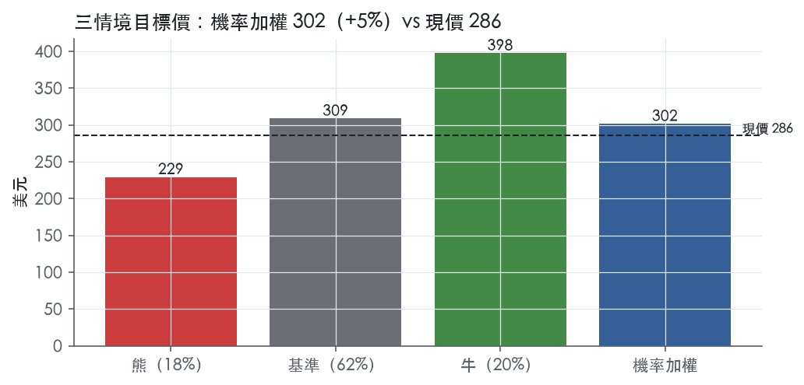
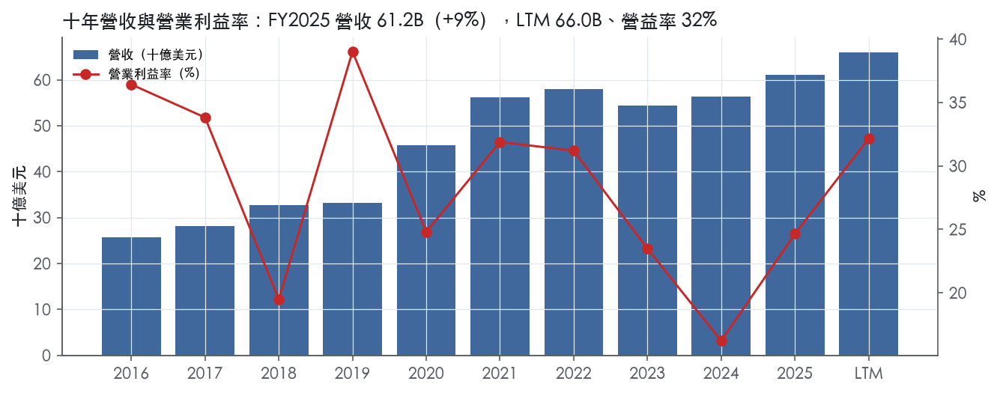
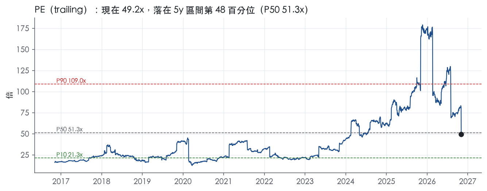
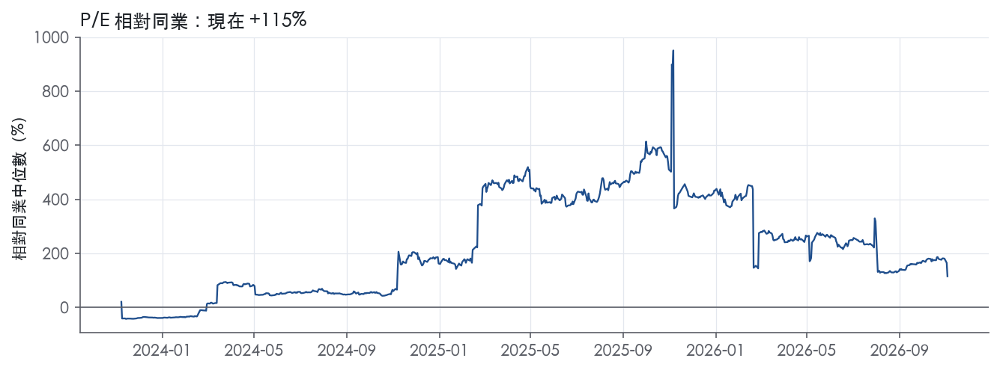
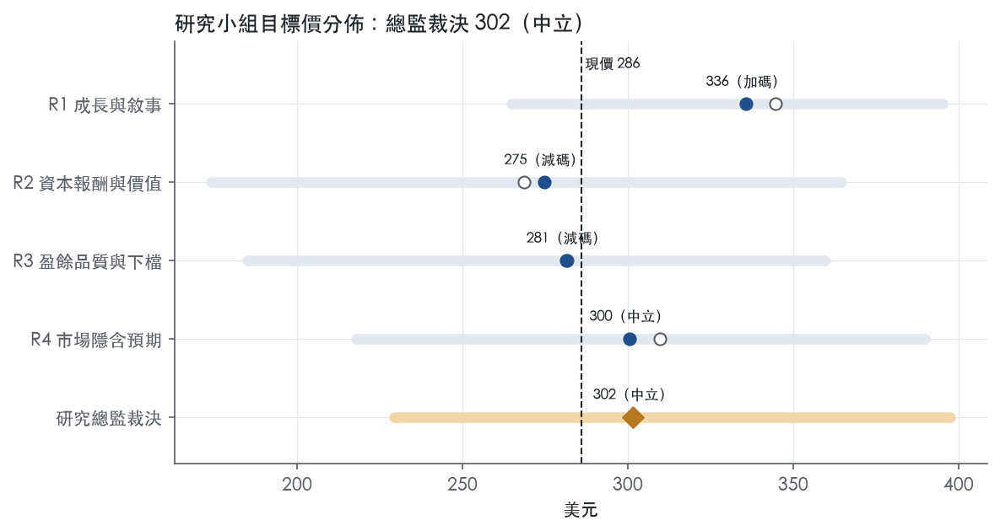
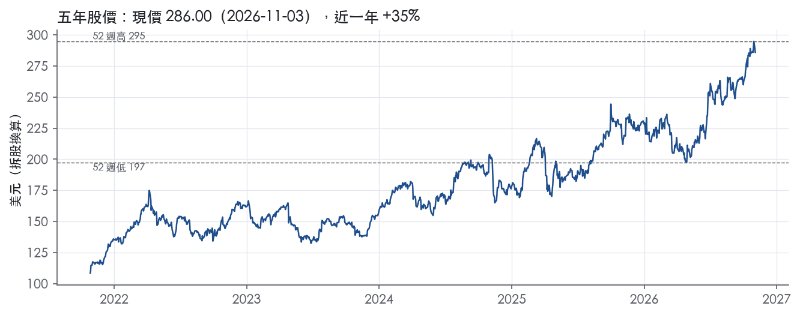

評等總表 › 醫療保健 › ABBV
盈餘上修與倍數收斂相抵，報酬貼門檻，中性｜評等 中立｜目標價 302
| 報告日 | 評等 | 目標價 | 當時股價 | 超額報酬 |
|---|---|---|---|---|
| 2026-11-03 | 中立 | 302 | 286 | -2.0% |
| 2026-10-09 | 中立 | 298 | 276 | +0.0% |
| 快評 | 動作 | 結論 |
|---|---|---|
| 2026-10-30 | 維持 | 獲利高於預測多屬一次性，維持中立 |
| 評等 | 中立（邊界，鄰近減碼） |
| 12 個月目標價 | 302 美元 |
| 現價 | 286.00 美元（2026-11-03） |
| 預期報酬 | 股價 +5.4%＋股息 2.4%＝總報酬 +7.9%；同業籃門檻 9.9%，超額 -2.0% |
| 估值方法 | P/E 28.0x，套在第 5–8 季的EPS（也就是一年後的未來四季） |
| 三情境 | 熊 229／基準 309／牛 398 |
| 研究流程 | 四位研究員兩輪辯論＋研究總監裁決 |
| 資料來源 | SEC EDGAR XBRL、Tiingo、FRED（全免費） |
盈餘上修與倍數收斂相抵，報酬貼門檻，中性（研究總監裁決，四位研究員兩輪辯論後）
評等 中立（邊界，鄰近減碼）｜12 個月目標價 302 美元（總監三情境機率加權 312 與研究員中位數 291 各半）｜現價 286.00（2026-11-03）
預期報酬：股價 +5.4%＋股息 2.4%＝總報酬 +7.9%。同業籃門檻 9.9%，超額 -2.0%，離減碼的分界不到三個百分點，屬邊界評等（落在其他級距的機率約三成）。
估值方法：P/E 28.0x，套在第 5–8 季的EPS（也就是一年後的未來四季）。三情境：熊 229（18%）／基準 309（62%）／牛 398（20%）。
什麼會讓研究總監改變看法：2027-02 CMS 名單不含 Rinvoq/Skyrizi 且 2027 指引隱含營收成長 ≥10%，倍數回到市場持平 32x、轉偏多；FY2026Q4 因 Apogee 認列大額 IPR&D 使 GAAP 營益率跌破 27%，或 Skyrizi/Rinvoq 任一季年增跌破 15%，營益率回 R2 路徑並下修倍數、轉偏空。
| 過去四季（實際，FY2026Q3） | 未來四季 | 第 5–8 季 | 第 9–12 季 | |
|---|---|---|---|---|
| 營收（B） | 66.0B | 72.3B | 77.7B | 82.8B |
| 營收成長 | 10.7% | 9.5% | 7.5% | 6.5% |
| 營業利益率 | 32.2% | 34.0% | 34.5% | 35.0% |
| EPS（美元） | 5.81 | 9.99 | 11.03 | 12.03 |
| EPS 成長 | 340.2% | 72.0% | 10.3% | 9.0% |
| 每股股息（美元） | 6.92 | 6.92 | 6.92 | 6.92 |
| P/E（現價） | 49.2x | 28.6x | 25.9x | 23.8x |
| 股息殖利率（現價） | 2.4% | 2.4% | 2.4% | 2.4% |
過去四季為申報數字；預測為研究總監的假設、程式計算。倍數與殖利率都用現價計算，用來看現價對應各期獲利的高低。
| 項目 | 上次（2026-10-12） | 這次（2026-11-04） | 變動 |
|---|---|---|---|
| 評等 | 中立 | 中立 | ＝ |
| 機率加權目標價（美元） | 298 | 302 | +1.2% |
| 超額報酬 | 0.0% | -2.0% | -2.1 pp |
| 目標倍數 | 35x | 28x | — |
| 未來四季營收成長 | 9.5% | 9.5% | +0.0 pp |
| 未來四季營益率 | 28.0% | 34.0% | +6.0 pp |
| 未來四季 EPS（美元） | 7.79 | 9.99 | +28.3% |
| 熊／基準／牛機率 | 17／60／23 | 18／62／20 | — |
程式計算；「未來四季」各自從當次報告的資料起點算。研究總監逐點說明見第八章「與上次報告比較」。
| 情境 | 機率（歷史） | 故事 | 未來四季營收成長 | 第 5–8 季營益率 | 倍數 | 目標價 | 股價漲跌 |
|---|---|---|---|---|---|---|---|
| 熊 | 18%（19%） | 對應風險表第 3 條（Skyrizi+Rinvoq 約 42% 集中度，口服 IL-23 競品使雙引擎提前降速）疊加第 1 條（2027-02 CMS 名單納入 Rinvoq/Skyrizi，市場提前計價 2033），倍數回到前瞻帶 P25–P50 下段 | 7.5% | 32.0% | 24.0x | 229 | -19.9% |
| 基準 | 62%（62%） | 免疫雙引擎抵銷 Humira 尾段與 Vraylar/Linzess 2027 議價，成長降到高個位數、GAAP 營益率停在 34–35%，倍數因 2028 進窗與攤銷稀釋由持平 32.2x 收斂到 28x | 9.5% | 34.5% | 28.0x | 309 | 8.0% |
| 牛 | 20%（19%） | 2027-02 名單不含 Rinvoq/Skyrizi、雙引擎 2027 維持 20% 以上、lutikizumab 2027 下半年送件，市場維持現行前瞻倍數（持平 32.2x）；倍數由 R4 的 33x 微調為 32x，牛情境不假設擴張 | 11.0% | 37.0% | 32.0x | 398 | 39.0% |
目標價由程式依研究總監的驅動與倍數計算；機率由研究總監給定。括號內是歷史頻率：把這檔股票過去十年 12 個月報酬的波動形狀，置中在基準情境，結果落在各情境附近的比例。

四位研究員用不同方法各自估值，回應研究總監的質疑後交出第二輪，最後由總監逐點裁決。各研究員的主張見第七章，裁決理由見第八章，完整論證見《研究底稿》。
| 立場（一輪→二輪） | 加權目標價（一輪→二輪） | 評等（一輪→二輪） | 第二輪倍數 | 熊～牛目標價 | |
|---|---|---|---|---|---|
| R1 成長與敘事 | 中性→看多 | 345→336 | 加碼→加碼 | 19.0x | 265～395 |
| R2 資本報酬與價值 | 看空→看空 | 269→275 | 減碼→減碼 | 30.0x | 174～365 |
| R3 盈餘品質與下檔 | 中性→中性 | 282→281 | 減碼→減碼 | 26.0x | 185～360 |
| R4 市場隱含預期 | 中性→中性 | 310→300 | 中立→中立 | 28.0x | 218～390 |
| 研究總監裁決 | 中性 | 302 | 中立 | 28.0x | 229～398 |
目標價由程式依各自的驅動與倍數計算；評等＝機率加權總報酬 − 同業籃門檻。
AbbVie是一家全球性、多角化的研究型生物製藥公司，在免疫學、神經科學、腫瘤學及美學領域擁有領導地位的綜合產品組合¹。公司運用其專業能力、專業人才及獨特的創新方法，開發並行銷用於治療世界上最複雜、最嚴重疾病的先進療法¹。AbbVie於2013年1月1日從Abbott分割獨立上市¹。客戶面對的是醫師、外部專家及其他醫療照護提供者，公司的主要行銷努力是爭取這些人開立處方或推薦其品牌產品；管理式照護機構（如健康維護組織及藥品福利管理人）、醫院及州與聯邦政府機構也是重要客戶¹。簡言之，AbbVie是一個靠處方藥與醫美產品組合賺錢、客戶端高度集中在醫療系統與保險支付方的公司。
AbbVie在財報上以單一全球業務分部運作，由執行長作為主要營運決策者統一分配資源與評估績效¹，但對外溝通與新聞稿仍以四大治療領域組合揭露營收：免疫學、神經科學、腫瘤學與美學。免疫學是最大引擎，核心產品為Skyrizi（IL-23抑制劑，適應症涵蓋乾癬、乾癬性關節炎、克隆氏症、潰瘍性結腸炎）、Rinvoq（口服JAK抑制劑，適應症更廣，涵蓋類風濕性關節炎、僵直性脊椎炎、異位性皮膚炎等）及正面臨生物相似藥侵蝕的Humira¹。Humira在全球面臨直接生物相似藥競爭，公司預期將持續受到這些生物藥及口服競品的競爭壓力¹。神經科學組合包括Vraylar（精神分裂症、躁鬱症）、Botox Therapeutic（慢性偏頭痛、膀胱過動症等多項適應症）、Ubrelvy與Qulipta（偏頭痛急性治療與預防）、Vyalev（晚期帕金森氏症）¹。腫瘤學組合含Imbruvica、Venclexta、Elahere及Epkinly等血液腫瘤與實體腫瘤藥物¹。美學組合以Botox Cosmetic與Juvederm填充劑為主力，在美國及全球主要市場居市場領先地位¹。10-K未揭露各治療領域占總營收的精確比重，但依Q3 2026新聞稿，免疫學9.165B美元為四大組合中最大，神經科學3.389B美元、腫瘤學1.696B美元、美學1.176B美元，合計約15.4B美元中有六成來自免疫學。
AbbVie在美國主要透過獨立批發商、部分直接銷售給零售商、藥局或患者的方式配銷藥品，2025年三大批發商McKesson、Cardinal Health及Cencora合計貢獻了AbbVie美國藥品銷售的絕大部分，單一批發商占2025年美國總收入比重不超過43%¹。美國以外地區，AbbVie主要透過批發商或經銷商銷售，並依市場不同透過集中式的全國支付系統協商給付條款¹。公司沒有任何單一客戶若流失會對業務造成重大不利影響¹。通路集中度高但分散風險已被管理層自行揭露為可控。
FY2025Q4營收16.62B美元，年增10.0%，毛利率72.6%、營益率27.3%（is系列資料包）。FY2026Q1營收15.00B美元，年增12.4%，毛利率71.9%、營益率26.6%。FY2026Q2營收16.99B美元，年增10.2%，毛利率74.7%、營益率37.9%，淨利3.61B美元明顯跳升。FY2026Q3營收17.404B美元，較去年同期增加10.3%（申報基礎）或10.5%（匯率中性基礎）²；GAAP稀釋EPS 2.37美元，較去年同期增加逾100%，調整後稀釋EPS 3.82美元，亦增加逾100%，包含每股0.11美元的收購中研發與里程金費用不利影響²。Q3分組合來看：免疫學組合全球營收9.165B美元，年增16.3%（申報基礎）或16.6%（匯率中性基礎），其中Skyrizi 5.776B美元、Rinvoq 2.706B美元、Humira 683M美元（年減31.2%）²；神經科學組合營收3.389B美元，年增19.4%，Vraylar 1.068B美元、Botox Therapeutic 1.080B美元、Ubrelvy與Qulipta合計847M美元、Vyalev 286M美元²；腫瘤學組合營收1.696B美元，年增0.8%，Venclexta 803M美元、Imbruvica 522M美元（年減26.1%）、Elahere 224M美元；美學組合營收1.176B美元，年減1.4%，Botox Cosmetic 669M美元、Juvederm 222M美元（年減11.9%）²。公司完成收購Apogee Therapeutics，深化免疫學管線²。公司將2026年調整後稀釋EPS指引區間由13.76–13.96美元上調至13.95–13.99美元，其中包含截至第三季已發生的每股0.69美元收購中研發與里程金費用不利影響²，並宣布2027年股息將提高5.2%，自2027年2月起支付²。四季走勢清楚看出Humira拖累持續收窄、Skyrizi與Rinvoq雙擎加速放量，拉動整體營益率與EPS同步上揚。
執行長表示，「AbbVie continues to deliver outstanding results, reflecting solid execution across our diverse portfolio」，並指出透過取得關鍵監管核准、產生差異化臨床數據及完成Apogee Therapeutics收購，增強了公司的長期成長潛力，因此再次上調全年指引並提高季度股息²。公司在10-K中強調，除了自主研發，也透過收購、選擇權取得協議、授權安排、戰略聯盟、共同推廣與共同開發協議及合資企業來擴充產品線¹；研發流程從發現到新藥上市通常需8至12年¹。Q3新聞稿列出多項管線進展作為成長引擎佐證：Skyrizi獲FDA核准皮下注射誘導治療克隆氏症、lutikizumab在化膿性汗腺炎三期INTREPID試驗達到主要終點、etentamig遞交BCMA x CD3雙特異性抗體BLA用於復發/難治多發性骨髓瘤、Juvmo（tavapadon）獲FDA核准用於帕金森氏症²。AbbVie的敘事邏輯是用Skyrizi與Rinvoq的高速成長去填補Humira的生物相似藥侵蝕缺口，同時靠併購（如Apogee）及自研管線（lutikizumab、etentamig、zumilokibart）延展免疫學與神經科學的下一波成長曲線。這套「雙引擎接棒＋外部併購補充管線」的策略目前執行順暢，從Q3營益率與EPS同步跳升可以看出效果已開始反映在財報上。唯一風險是IRA藥價談判已將Imbruvica、Vraylar、Linzess及Botox陸續納入政府議價名單，未來可能侵蝕現有大品牌的現金流韌性。

AbbVie 的護城河評為寬，核心是兩項依據：免疫學雙主力的專利與生物藥監管排他期，以及 Humira 失去獨占後 ROIC 仍未跌破資本成本的實績。趨勢評為穩定而非變寬，因為 ROIC 已回落到十年區間底部，IRA 政府議價也在縮短大品牌的有效獨占期；但 Skyrizi 與 Rinvoq 的保護期至少延伸到 2033 年。
無形資產（專利、監管排他、品牌）是主要來源。
轉換成本是次要來源。許多生物藥用於類風濕性關節炎、發炎性腸道疾病等慢性疾病的長期治療¹。Skyrizi 用於克隆氏症與潰瘍性結腸炎時，需三劑靜脈誘導，再以穿戴式注射器每八週維持¹。病情穩定的患者若換藥，要重走誘導並承擔療效不確定，這在醫師端形成換藥惰性。這道成本擋不住新確診患者流向競品，因為免疫學產品同時與 IL-23、IL-17、JAK 抑制劑及生物相似藥競爭¹。
看得到，但數字支持的是「寬」，不是「越來越寬」。ROIC 有資料的 9 年全數高於資本成本代理值 9.9%，十年平均 22.8%，平均減資本成本為 12.9%。最關鍵的是壓力測試：Humira 進入生物相似藥競爭期間，ROIC 最低為 15.5%與 15.0%，仍高於資本成本，代表公司已實際跨過一次專利懸崖。毛利率十年平均 71.4%、標準差 4.8%、最低 62.4%，定價權長期維持在高檔。FCF 利潤率十年平均 35.5%、標準差 5.1%，現金創造力同樣穩定。
數字也有和寬護城河衝突的地方：ROIC 標準差 12.4%、營業利益率標準差 7.1%，波動並不小。ROIC 也從 20.7%降到最新的 15.8%，低於十年平均。我們仍維持「寬」，理由有三：
ROE 最新值 15367.3%是股東權益極小造成的分母失真，不採用為判斷依據。
第一大威脅是 IRA 政府議價，它直接縮短護城河的有效長度。IRA 規定，生物藥自 FDA 核准起超過 13 年、小分子藥超過 9 年者，可被納入政府定價¹。Imbruvica 自 2026 年 1 月 1 日起適用 Part D 政府定價，Vraylar 與 Linzess 自 2027 年 1 月 1 日起適用，Botox 自 2028 年 1 月 1 日起適用 Part B 與 D¹。公司自承，未來可能有更多產品被選入，包括營收規模大的產品，這可能在智慧財產保護到期前就加速營收侵蝕¹。Skyrizi 進入議價名單的時點，有可能早於 2033 年專利到期；屆時專利仍在，但定價權已被削弱。
第二是 2033 年的集中度懸崖。Skyrizi 與 Rinvoq 是公司唯二被點名為重大的專利資產¹。Humira 已在全球面臨直接生物相似藥競爭¹，同樣劇本 2033 年後會輪到 Skyrizi。
第三是依賴併購補管線，可能稀釋 ROIC。公司以收購補充研發¹。每一筆高溢價收購都會擴大投入資本；即使產品本身成功，ROIC 也可能被持續推向資本成本。
第四是同類競爭與醫美的品牌稀釋。競爭者推出新產品或醫療實務改變，都可能導致產品過時¹。
目標倍數相對同業應給溢價：2033 年前有物質專利能見度，加上已驗證過專利懸崖的過渡能力，支撐高於同業的倍數與更長的超額報酬期。溢價期限應以 2033 年為錨，2033 年後的終值假設回到同業水準，並對 IRA 議價提前侵蝕做下修情境。目前 EV/Sales 8.7x 已高於 5 年 P90 的 7.9x，P/FCF 26.9x 也高於 5 年 P90 的 22.2x，護城河溢價大致已反映在股價，不建議再往上加碼倍數。
| 指標 | 最新 | 十年平均 | 標準差 | 最低 | 最高 |
|---|---|---|---|---|---|
| ROIC | 15.8% | 22.8% | 12.4% | 15.0% | 57.2% |
| 毛利率 | 70.2% | 71.4% | 4.8% | 62.4% | 77.6% |
| 營業利益率 | 24.6% | 28.1% | 7.1% | 16.2% | 39.0% |
| FCF 利潤率 | 29.1% | 35.5% | 5.1% | 25.6% | 41.8% |
| ROE | 15367.3% | 1720.2% | 4827.1% | -339.6% | 15367.3% |
程式計算。資本成本代理值（10 年債＋5%）：9.9%；ROIC 平均減資本成本：12.9%；ROIC 有資料的 9 年中，高於資本成本 9 年。
LTM 營業現金流／淨利 1.94x、自由現金流／淨利 1.82x，近三年平均更高達 4.53x／4.31x，十年平均 2.86x／2.73x，三個窗口全部是綠燈，盈餘品質在現金轉換這一項沒有疑慮。應計比率 LTM -6.9%、近三年 -11.6%、十年 -9.8%，全部為負值且遠優於 5.0% 紅線，代表 GAAP 淨利持續低於現金流而非靠應計膨脹，這是因為攤銷等非現金費用壓低了淨利、但不影響現金。換句話說，ABBV 的「盈餘品質風險」不是現金跟不上盈餘，反而是淨利本身被會計費用低估，真正要注意的是淨利率的大幅波動是否反映真實營運惡化。
FY2026Q3 GAAP 稀釋 EPS 2.37 美元，調整後（Adjusted）稀釋 EPS 3.82 美元，差距主要來自公司認列的「specified items」，其中明確揭露的是收購 IPR&D 與里程碑費用造成 0.11 美元的不利影響²。GAAP 毛利率 75.4% vs 調整後毛利率 85.1%，GAAP SG&A 占營收 23.5% vs 調整後 21.2%，GAAP R&D 占營收 14.7% vs 調整後 13.9%，GAAP 營益率 36.0% vs 調整後 48.7%，中間的落差主要是無形資產攤銷（通常列在銷貨成本與 SG&A 中）、收購相關費用以及 acquired IPR&D and milestones expense（佔營收 1.2%）²。GAAP 稅率 12.6% vs 調整後稅率 13.6%，差異不大，不是主要調整項²。我的判斷：無形資產攤銷是真實的經濟成本（反映過去併購付出的對價，未來仍會持續侵蝕 GAAP 淨利），不該完全加回；但 IPR&D／里程碑費用波動大、屬於交易驅動的非經常性支出，拿掉看核心經營趨勢是合理的。
淨負債／EBITDA LTM 2.42x、近三年平均 2.79x、十年平均 2.84x，黃燈，槓桿中度偏高但未惡化，且近一年因 Apogee 併購完成後總債務上升至 80.90B（FY2026Q3）²。利息保障倍數 LTM 7.13x、近三年 4.73x、十年 6.36x，同為黃燈，低於 8.00x 綠燈門檻但遠高於 3.00x 紅線，付息能力無虞但不寬裕。稀釋股數年變動 LTM +0.1%、近三年平均 -0.1%、十年平均 +1.0%，黃燈但波動極小，股東稀釋不是問題。（股利＋回購）／淨利 LTM 131.9%、近三年 284.6%、十年平均 189.4%，持續超過 100%，代表公司長期用舉債或現金儲備支應股東回饋而非單靠淨利，這點和淨負債持續在 2.4-2.8x EBITDA 區間一致，屬於刻意的資本配置策略而非失控。公司公告 2027 年股息將再上調 5.2%，顯示管理層對現金流前景有信心，但也代表槓桿不會主動去化²。
1. 淨利率 FY2019→FY2020 跳動 -14 個百分點：年度表顯示營益率由 39.0%（FY2019）驟降至 24.8%（FY2020），同期營收因 Allergan 併購大增 37.7%，判斷為併購帶來的無形資產攤銷與整合費用一次性/結構性增加所致，屬會計口徑造成的真實但非經常性壓力，不是現金流警訊，因為同年 CFO／FCF 仍雙雙成長至 17.59B／16.79B。
2. 淨利率 FY2020→FY2021 跳動 +10 個百分點：營益率由 24.8%回升至 31.9%，為前一年併購整合費用高基期的反轉，加上營收規模持續擴大帶來的攤銷費用稀釋，屬於一次性項目的正常回吐，不代表營運品質跳升。
3. 淨利率 FY2022→FY2023 跳動 -11 個百分點：營益率由 31.2%降至 23.5%，同期 Humira 面臨生物相似藥競爭、營收由 58.05B 降至 54.32B（-6.4%成長），加上年度表毛利率同步由 70.0%降至 62.4%，顯示這是 Humira 專利懸崖與相關商譯減損/定價壓力的真實結構性衝擊，而非會計假警報，需要在估值中持續追蹤 Humira 外的成長動能是否補上缺口。
4. 淨負債／EBITDA 黃燈（2.42x/2.79x/2.84x）：槓桿持續處於中度水準且 FY2026Q3 總債務因 Apogee 收購上升至 80.90B，是真實但可控的風險，公司現金轉換能力強（CFO/FCF 常年為淨利 2-4 倍）足以支撐付息與降槓桿，但限制了估值給予過高槓桿溢價的空間（8-K）。
5. 利息保障倍數黃燈（7.13x/4.73x/6.36x）：低於綠燈門檻但遠高於紅線，近三年偏低主要反映 FY2023-FY2025 營益率受 Humira 侵蝕壓低營業利益，非利息負擔驟增，隨著 Skyrizi/Rinvoq 放量、FY2026Q3 營益率已回升至 36.0%，這項指標應隨之改善，屬於可解釋、正在修復中的黃燈（8-K）。
6. 稀釋股數年變動黃燈：變動幅度極小（LTM +0.1%、十年 +1.0%），未達紅線也未見明顯稀釋趨勢，屬於噪音級波動，非真問題。
7. 應收帳款成長－營收成長 FY2025 +6.7pp、存貨成長－營收成長 FY2025 +9.8pp（黃燈）：營運資金成長略快於營收，可能反映新藥（Skyrizi/Rinvoq）放量下的庫存與應收帳款建置，若持續擴大將開始侵蝕未來現金轉換，目前幅度未達 15pp 紅線，列為觀察項而非立即風險。
估值應以 GAAP 稀釋 EPS 5.81（LTM）為盈餘品質的下限基準，調整後 EPS（如 FY2026Q3 的 3.82 美元）可用於理解核心經營動能，但無形資產攤銷是真實經濟成本，不宜完全用調整後數字取代 GAAP 做估值定錢。現金轉換全線綠燈、應計比率持續負值，不需要額外對盈餘打折，但淨負債／EBITDA 與利息保障倍數的黃燈意味著槓桿已經吃掉部分估值彈性，EV/EBITDA 應以中性而非溢價倍數看待，尤其目前 19.9x 已位於五年分位數 70.9%，偏貴端。
| 項目 | LTM | 近三年 | 十年 | 燈號 | 規則 |
|---|---|---|---|---|---|
| 營業現金流／淨利 | 1.94x | 4.53x | 2.86x | 綠 | ≥1.00x 綠、<0.80x 紅 |
| 自由現金流／淨利 | 1.82x | 4.31x | 2.73x | 綠 | ≥0.90x 綠、<0.60x 紅 |
| 應計比率（(淨利−CFO)／平均總資產） | -6.9% | -11.6% | -9.8% | 綠 | ≤0.0% 綠、>5.0% 紅 |
| SBC／營收 | 1.4% | 1.5% | 1.4% | 綠 | ≤3.0% 綠、>8.0% 紅 |
| 淨負債／EBITDA | 2.42x | 2.79x | 2.84x | 黃 | ≤1.50x 綠、>3.00x 紅 |
| 利息保障倍數（營業利益／利息） | 7.13x | 4.73x | 6.36x | 黃 | ≥8.00x 綠、<3.00x 紅 |
| 稀釋股數年變動 | 0.1% | -0.1% | 1.0% | 黃 | ≤0.0% 綠、>3.0% 紅 |
| （股利＋回購）／淨利 | 131.9% | 284.6% | 189.4% | 綠 | ≥50.0% 綠、<0.0% 紅 |
| 應收帳款成長 − 營收成長（FY2025） | +6.7pp | — | — | 黃 | ≤5pp 綠、>15pp 紅 |
| 存貨成長 − 營收成長（FY2025） | +9.8pp | — | — | 黃 | ≤5pp 綠、>15pp 紅 |
程式計算；燈號以 LTM（無則近三年平均）判定。
| 風險 | 觸發指標（看什麼數字、在哪裡看） | 對 EPS 的影響方向與粗略幅度 | 未來 12 個月發生機率（高／中／低） | 出處 |
|---|---|---|---|---|
| IRA政府議價藥品範圍擴大 | 每年8月CMS公布Medicare Part D/B議價藥品新名單；觀察是否新增Skyrizi、Rinvoq或現有Vraylar、Linzess、Botox議價生效日 | 方向：負；幅度：中～大，取決於被選入藥品的營收占比（Imbruvica已入2026名單、Vraylar/Linzess 2027、Botox 2028）³ | 高 | 10-K 年報 FY2025 Item 1A（風險因素） |
| Humira生物相似藥侵蝕持續 | 每季新聞稿Humira年增率（Q3 2026為-31.2%）² | 方向：負；幅度：中，Humira基數已縮小但仍在流失 | 高 | 8-K 財報新聞稿（2026-10-30） |
| 雙引擎集中度：Skyrizi+Rinvoq占比過高 | 季報中兩藥合計占總營收比重（2025年合計約42%）³；任一品牌年增率是否轉弱 | 方向：負；幅度：大，因「兩大產品合計占總淨收入42%」³ | 中 | 10-K 年報 FY2025 Item 1A（風險因素） |
| 專利挑戰與生物相似藥提前進入（Skyrizi/Rinvoq composition of matter patent 2033年到期；Rinvoq和解後學名藥最早2037年才可進入） | 觀察ANDA/生物相似藥訴訟公告、FDA核准生物相似藥上市公告 | 方向：負；幅度：大（若提前失去市場排他性）³ | 低 | 10-K 年報 FY2025 Item 1A（風險因素） |
| 研發管線失敗（lutikizumab、etentamig、zumilokibart等後期資產） | 三期臨床topline結果公告、FDA/EMA核准或拒絕公告 | 方向：負；幅度：中～大，取決於哪個資產失敗 | 中 | ³、² |
IRA藥價談判範圍擴大是目前機率最高、且公司自己在10-K反覆強調的風險³。公司揭露Imbruvica已自2026年1月起適用Medicare Part D政府議價，Vraylar與Linzess自2027年1月起適用，Botox自2028年1月起適用Part B和Part D³。公司明確寫道「可能有更多產品，包括產生大量營收的產品，未來年度被選入，這可能加速智慧財產權到期前的營收侵蝕」³。觀察點很具體：每年8月CMS公布的下一批議價藥品清單，一旦Skyrizi或Rinvoq被列入，將直接衝擊公司最大的兩個成長引擎。公司在2026年1月已與美國政府簽訂為期三年的自願協議，以定價讓步及美國研發與資本投資換取關稅豁免與未來定價豁免，顯示管理層已預期政策壓力會持續³。
Humira生物相似藥侵蝕是已經發生、持續中的風險，不是潛在風險。Q3 2026 Humira營收683M美元，年減31.2%²，侵蝕速度仍快，雖然基數已大幅縮小，對整體營收的邊際拖累已降低，但仍是觀察免疫學組合健康度的訊號。公司在10-K寫明「Humira面臨全球直接生物相似藥競爭，AbbVie將持續面臨這些生物藥及口服競品的競爭壓力」³。
雙引擎集中度過高是結構性風險：Skyrizi與Rinvoq「各自占AbbVie總淨收入超過10%，合計約占2025年總淨收入42%」³。這代表任何一個藥（無論是監管、專利或臨床數據事件）出狀況，都會直接拖累整體財報，而非像過去Humira式的分散產品線可以互相緩衝。Q3 2026兩藥合計仍貢獻8.482B美元、約占總營收17.404B美元的一半左右（量化自8-K數字，未換算比率）²，集中度沒有下降。
專利挑戰與生物相似藥提前進入機率相對低，因為Rinvoq已與所有學名藥申請者達成和解，「假設獲得兒科排他期，美國最早不會有Rinvoq片劑學名藥進入，直到2037年4月前」³，Skyrizi與Rinvoq的美國組成物專利預計2033年到期³。但公司也警告第三方或政府可能挑戰或規避專利，且部分國家可能基於國家政策採行強制授權³，一旦發生將直接打擊市場排他性，幅度大但機率低。
研發管線失敗風險來自公司敘事高度依賴後期管線接棒。公司在10-K中承認「生物製藥產業研發的失敗率本質上很高，失敗可能在研發過程的任何階段發生，包括在投入大量資源之後」³。Q3新聞稿列出的進展（lutikizumab三期INTREPID達主要終點、etentamig遞交BLA、Apogee收購帶來zumilokibart與APG273）若任一資產後續臨床或監管受挫，會直接影響公司用來填補Humira缺口及支撐未來成長的敘事。
現價 286.00 對應 trailing（過去四季）P/E 49.2x、EV/EBITDA 19.9x、EV/EBITA 20.5x、EV/Sales 8.7x、FCF 殖利率 3.7%。主要估值倍數 P/E 現在 49.2x，落在5 年區間第 48 百分位（P10／P50／P90 = 21.3x／51.3x／109.0x）。

把程式的機械基準預測放到現價下，市場付的前瞻倍數是：P/E（未來四季） 32.2x、P/E（第 5–8 季） 29.6x。反推 DCF 顯示市價隱含未來五年營收年成長 9.6%（WACC 9.0%、終值成長 3.0%、FCF 利潤率 34.9%，SBC 不加回）。
| 倍數 | 現在 | 5 年 P10 | 5 年 P50 | 5 年 P90 | 現在分位 | 全期 P50 |
|---|---|---|---|---|---|---|
| P/E | 49.2x | 21.3x | 51.3x | 109.0x | 47.6% | 27.8x |
| EV/EBITDA | 19.9x | 12.1x | 16.4x | 23.9x | 70.9% | 15.7x |
| EV/EBITA | 20.5x | 12.5x | 17.0x | 25.0x | 70.7% | 16.3x |
| EV/EBIT | 27.2x | 18.0x | 27.0x | 43.0x | 51.2% | 21.5x |
| EV/Sales | 8.7x | 5.5x | 6.5x | 7.9x | 98.8% | 5.9x |
| P/S | 7.7x | 4.4x | 5.5x | 6.8x | 98.7% | 4.7x |
| P/FCF | 26.9x | 10.6x | 13.7x | 22.2x | 98.6% | 11.9x |
trailing 倍數（股價 ÷ 過去四季）；分位以每個交易日計算。
同業籃：ABT, ALNY, AMRX, ALKS, ACAD, ANIP（SIC 2834 同業 57 家中，CY2025 營收最接近的 6 家）。評等門檻 9.9%：同業「倍數不變下持有一年」的隱含報酬中位數（＝ FCF 殖利率 ×(1＋g)＋g，g 為 5 年營收年複合成長並夾在 −2%～8%），每家夾在 0～15%、P/E 低於 5 倍視為資料可疑而排除，中位數再限制在 10 年債到 10 年債＋5% 之間（同業原始中位數 10.5%）；排除：ALNY（隱含報酬算不出來）。
| 代號 | 市值 | 5 年營收 CAGR | 營益率 | ROIC | P/E | 5 年 P/E 中位數 | EV/EBITDA | P/FCF | 隱含報酬 |
|---|---|---|---|---|---|---|---|---|---|
| ABBV | 506.8B | 6.0% | 32.2% | 15.8% | 49.2x | 51.3x | 19.9x | 26.9x | 9.9% |
| ABT | 190.6B | 5.1% | 17.1% | 11.3% | 30.6x | 29.1x | 20.0x | 25.8x | 9.1% |
| ALNY | 21.4B | 49.8% | — | — | — | — | — | — | — |
| AMRX | 6.6B | 8.7% | 14.6% | 16.5% | 41.4x | — | — | 51.9x | 10.1% |
| ALKS | 7.7B | 7.3% | 3.7% | 18.8% | — | — | 58.1x | 33.8x | 10.5% |
| ACAD | 3.5B | 19.4% | 7.6% | 54.5% | 9.2x | — | 26.3x | 24.3x | 12.4% |
| ANIP | 1.6B | 33.5% | 15.4% | 15.9% | 15.2x | — | 6.5x | 9.2x | 19.8% |
| 同業中位數 | 14.0% | 14.6% | 16.5% | 22.9x | 29.1x | 23.1x | 25.8x | 9.9% |
全部 trailing，程式以各公司 SEC XBRL 與 Tiingo 行情計算；第一列為本檔。
P/E 相對同業中位數：現在 115.0%，過去 1 年平均 277.9%、3 年 227.7%、5 年 —；EV/EBITDA 相對同業中位數：現在 -14.2%，過去 1 年平均 26.1%、3 年 25.6%、5 年 5.9%。

事後實現前瞻倍數帶（P/E，2018-11-19..2025-11-17）：P10／P50／P90 = 15.2x／33.9x／79.7x。它是每個交易日的股價除以之後四季實際實現的指標；一年後，今天的第 5–8 季正是那時的未來四季，所以這條帶是 12 個月目標價的同口徑倍數。因為用的是事後實際而非當時預期，過去成長超乎預期的公司這條帶會偏低。
程式的機械基準（成長率從過去四季年增率三年收斂到 6%、利潤率持平）用 事後實現前瞻 P/E P50 估值得到 327（14.5%），市場現行前瞻倍數（現價 ÷ 基準 未來四季指標）一年後持平，套在基準 第 5–8 季指標得到 311。這兩個數字只是參考點，不是本報告的目標價；研究員對這個定價的回應在第七章。
下表是每位研究員第一輪（各自獨立）與第二輪（回應研究總監的質疑後）的結果。目標價全由程式依各自的假設計算。
| 立場（一輪→二輪） | 加權目標價（一輪→二輪） | 評等（一輪→二輪） | 第二輪倍數 | 熊～牛目標價 | |
|---|---|---|---|---|---|
| R1 成長與敘事 | 中性→看多 | 345→336 | 加碼→加碼 | 19.0x | 265～395 |
| R2 資本報酬與價值 | 看空→看空 | 269→275 | 減碼→減碼 | 30.0x | 174～365 |
| R3 盈餘品質與下檔 | 中性→中性 | 282→281 | 減碼→減碼 | 26.0x | 185～360 |
| R4 市場隱含預期 | 中性→中性 | 310→300 | 中立→中立 | 28.0x | 218～390 |
| 研究總監裁決 | 中性 | 302 | 中立 | 28.0x | 229～398 |
目標價由程式依各自的驅動與倍數計算；評等＝機率加權總報酬 − 同業籃門檻。
分歧度：第一輪 加權目標價 269～345（區間＝現價的 27%）· 倍數 19～30x · 立場 中性×3、看空×1；第二輪 加權目標價 275～336（區間＝現價的 21%）· 倍數 19～30x · 立場 看多×1、看空×1、中性×2。

| 研究員 | 第二輪主張 | 堅持的理由 |
|---|---|---|
| R1 成長與敘事 | 看多；給現金流倍數19x，免疫雙引擎帶動盈餘複利，倍數不擴張也有超額報酬。 | 熊情境機率維持22%：自願協議未必涵蓋議價，42%集中度怕競品搶走新患者。 |
| R2 資本報酬與價值 | 看空；給P/E 30x，盈餘會成長，但現金流倍數收縮會吃掉這段報酬。 | 股價對現金流在五年第98.6百分位，資本報酬率15.8%在十年底部，不給高倍數。 |
| R3 盈餘品質與下檔 | 中性；給P/E 26x，絕對報酬中性，但落後9.9%同業門檻。 | 收購中研發是經常性成本，他不因調整後EPS漂亮就把它加回營益率。 |
| R4 市場隱含預期 | 中性偏空；給P/E 28x，市價預付的五年成長高於9.6%。 | 攤銷稀釋帶來的EPS增量市場不付錢，2028年Botox議價也會被定價。 |
每位研究員的逐條回應與完整論證見《研究底稿》（ABBV_研究底稿_2026-11-04.docx）。
| 分歧點 | R1 成長 | R2 價值 | R3 品質 | R4 預期 | 什麼資料會分出勝負 |
|---|---|---|---|---|---|
| 1. Q5–Q8 營益率（op_margin_y2） | 34.5%：乾淨季延續、組合升級 | 31.0%：LTM 32.2% 起算再扣 IRA −1.2pp | 34.5%：Q2/Q3 乾淨季扣回經常性 IPR&D | 35.0%：攤銷被稀釋 | FY2026Q4 新聞稿（2027-02 初）GAAP 營益率與 Apogee 的 IPR&D 認列：Q4 ≥30% 支持 R3，跌回 27% 以下 R2 勝 |
| 2. 營收成長 y1／y2 | 9.5／7.5% | 8.5／6.5% | 8.5／6.5% | 9.5／7.5% | FY2026Q4 營收年增是否 ≥9%、2027 年指引、Skyrizi／Rinvoq 年增是否守住 20% |
| 3. 目標倍數 | 19x EBITDA@ntm（≈持平 −5%） | 30x eps：現金流倍數收縮 | 26x eps：P25 起加懸崖溢價、集中度封頂 | 28x eps：調整後 P/E 持平再扣 2028 進窗 | 2027-02 CMS 議價名單；一年後 trailing EV/EBITDA 是否低於 19.9x |
| 4. 稅率 | 18%（假設） | 22%（沿用） | 18%：IPR&D 不可扣抵佔比回落 | 22%（沿用） | FY2026 全年 GAAP 稅率（2027-02 新聞稿） |
| 5. 熊情境深度與觸發 | 16x EBITDA：競品侵蝕集中度 | 24x：CMS 名單＋提前計價 2033 | 20x：IRA＋固定成本去槓桿＋再舉債 | 24x：口服 IL-23 競品＋IRA | 2027-02 名單；口服 IL-23 競品的新患者份額；FY2027 總債務是否再升 |
1. 營益率：選 R3（34.0／34.5／35.0%）。 決定性證據是毛利率的結構性上移：FY2026Q2、Q3 GAAP 毛利率 74.7%、75.4%（／Q3），是 Allergan 併購以來最高（FY2020–25 年度最高只有 70.2%），來源是 Humira（Q3 單季 683M、年減 31.2%²）在組合中的佔比萎縮、高毛利的 Skyrizi／Rinvoq 佔比上升。R2 以 LTM 32.2% 起算，但 LTM 含 FY2025Q4 27.3%、FY2026Q1 26.6%（／FY2026Q1）兩個毛利率仍在 72% 以下的季度；他自己量化的 IRA 拖累只有 −0.5／−1.2／−1.3pp（假設），從乾淨季 36.0%扣下來也到不了 31%。R3 把收購中研發當經常性費用留在營益率（年初至今每股 0.69²），這才是從 36–38% 回到 34–35% 的正確機制。研究部紀錄也指向同一邊：機械基準的營業利益誤差中位數 −3.9%（持平假設在轉折期系統性偏低），R3 絕對誤差 8.2% 是四人最小、勝基準 66%；R4 誤差中位數 +2.1% 偏高，他的 35.0% 與 R1 的 y3 35.5% 把攤銷稀釋多算了一次（R1 已在 G3 承認）。保留的風險：Apogee 若以資產收購入帳，FY2026Q4 會有大額 IPR&D，列入可證偽主張第 1 條。
2. 營收成長：選 R1（9.5／7.5／6.5%）。 連四季年增 10.0／12.4／10.2／10.3%（～FY2026Q3），免疫 +16.3%、神經科學 +19.4%²；Humira 基數已縮到單季 683M，再跌三成對總營收的拖累只剩零頭。研究部四個來源的營收誤差中位數全部偏低（−0.2% 到 −0.7%），R3 最偏低、R2 次之，依用法要往上修；兩位的 8.5% 比最近任一季低 1.5pp 以上，下修卻沒有對應到具體品牌的量（R2 把 Vraylar 議價放在營益率，R3 放在營收但未量化）。y3 取 R1 的 6.5% 而非 R4 的 7.0%：Q9–Q12 含 Botox 2028 全年議價¹，雙引擎的基期到 2028 也已倍增。這組假設近端與市價反推 DCF 的五年 9.6% 持平、遠端低於它，就是 R4 說的「近端持平、遠端嚴苛」。
3. 目標倍數：選 R4，28x eps@q5_q8。 低於市場持平 32.2x 約 13%（程式檢查表），三個理由全是個股因素：（a）一年後的前瞻窗是 2027Q4–2028Q3，含 Botox Part B／D 自 2028-01-01 起三季議價¹，距 2033 年物質專利到期只剩五年，護城河章也把溢價期錨在 2033，超額報酬期每過一年短一年；（b）GAAP EPS 從 LTM 5.81往上跳的一大段是固定攤銷被營收成長稀釋的會計效果——LTM EBITDA 28.94B 與 EBITA 28.16B 只差折舊（ltm.ebitda／），市場以調整後 EPS（2026 指引 13.95–13.99²）定價，R4 的拆解顯示 29x 配他的 EPS 恰好等於調整後 P/E 持平（310.65 對 311，程式第一輪結果），持平口徑下 GAAP 倍數本來就要收斂；（c）2027-02 CMS 名單是視窗內有日期的二元事件，公布前市場不會給滿倍數。R2 的 30x 缺口：他的收縮理由（P/FCF 在 5 年第 98.6 百分位、ROIC 15.8% 在十年底部）配的是 31% 營益率；放到我裁定的 34.5% 上，30x 幾乎等於為攤銷稀釋的 EPS 付持平倍數，與他 V5「看空來自倍數收縮」自相矛盾。R3 的 26x 缺口：從 P25 16.7x 起加「懸崖距離溢價」再以集中度封頂，起點是 Humira 懸崖前夕年份的倍數，當時的單品佔比與懸崖距離都和今天不同，兩段都是主觀量。R1 的 19x EBITDA 相對持平 −5%，方向一致，當交叉驗證：程式會列出 28x 隱含的 EV/EBITDA(Q5–Q8)，應落在自家 5 年 P50 16.4x附近、低於現行 19.9x。相對同業只做方向：ABT trailing 30.6x、5 年中位數 29.1x（同業表），28x 前瞻對 ABT 持平偏折，成長優勢被 42% 集中度³與淨負債／EBITDA 2.42x（財務體質章）抵銷；其餘五家市值 2–21B，只用於門檻。
4. 稅率：選 R3，18%（假設）。 機制是收購中研發多半不可扣抵（判斷），FY2023–25 中位數 22% 對應 IPR&D 佔比高的年份；FY2026 年初至今 IPR&D 每股 0.69、Q3 佔營收 1.2%²已明顯回落，Q3 GAAP 12.6%／調整後 13.6% 是偏輕季的下限。FY2025 全年稅率不在資料包（年度表無稅率欄），R2、R4 沿用 22% 也沒給理由，所以 18% 以可證偽主張第 3 條驗證。
5. 熊情境：選 R4（24x，7.5／4／3%，31／32／31%）。 風險表第 1 條（IRA 名單擴大，機率高）在 12 個月內的衝擊主要在倍數，因為名單公布與生效有時差（Vraylar、Botox 都是先公布後生效¹）；第 3 條（兩藥合計約 42%³）負責營收與營益率下修。R3 的 20x 另疊了「再舉債併購」，不在風險表，且 20x 已貼近前瞻帶 P25 16.7x——那是懸崖前夕的倍數，對距懸崖六年的公司太深。R2 的 24x 配 27% 營益率，比 R4 更深的營益率下修沒有品牌層面的量。R1 的 16x EBITDA 等於自家 5y P50，與 R4 方向一致，口徑不同。
漂移與總經偏離。 四位的第二輪修正全部附證據、向中位數靠攏比例最高 33%（R4），無人觸及退回門檻：R4 29x→28x 有拆解（310.65 對 311）支撐；R2 熊 21%→13%、R3 熊 21%→15% 是對 Vraylar 重複計算與自願協議的回應，是我在 V2、Q2 要求的；R1 只改立場以配合既有驅動。drift_rejections 為空。四位 macro_deviations 皆無，接受；本行前提 10 年期 4.98 持平、本股敏感度 t 值 −0.0，利率不進入任何倍數理由（R2 已刪 FCF 殖利率對公債、R4 已刪帶期間利率）。
與機械基準不同的驅動：
目標倍數 28x，metric eps，horizon q5_q8，與事後實現前瞻 P/E 帶同口徑。帶的 P50 33.9x 分母被 FY2023–25 GAAP EPS 2.72／2.39／2.36（～FY2025）壓低，四位一致不取 P50；28x 落在 P25 16.7x 與 P50 之間，低於市場持平 32.2x 約 13%，也低於基準模型的零報酬倍數 29.6x——正報酬只來自我們的 Q5–Q8 EPS 高於基準 9.65，不來自倍數。對照上次報告：35x 對當時持平 40.6x 折 14%，這次折 13%，相對折價一致，絕對倍數下移全是分母正常化。
現價 286 對基準 Q5–Q8 EPS 付 29.6x、對 NTM 付 32.2x，反推五年成長 9.6%。差距不在近端盈餘——我們的 9.5% 成長與 34–35% 營益率都高於基準，Q3 已部分兌現——而在兩處：一是遠端成長，實現 FCF 利潤率（LTM FCF 18.87B 對營收 66.01B）低於反推 DCF 假設的 34.9%，市價隱含的五年成長因此高於 9.6%，比我們的 y3 6.5% 嚴苛得多；二是倍數，市場為調整後 EPS 定價，我們不把攤銷稀釋帶來的 GAAP EPS 增量當成會被付錢的盈餘。兩者相抵，基準情境總報酬貼近同業門檻 9.9%，立場中性；若程式算出的超額微幅落入加碼，差距全來自 GAAP 分母正常化的機械效果，我們不據此轉多。
現價 286.00 → 點估目標價 309 → 機率加權目標價 312 → 目標價 302，差距拆成五段：成長順延 +25 美元（市場現行倍數 32.2x 一年後持平、獲利照機械基準）；倍數差 -41 美元（總監倍數 28.0x vs 市場持平倍數 32.2x，同一機械基準預測）；盈餘差 +38 美元（總監預測的第 5–8 季EPS 0.0B vs 機械基準 0.0B，同一倍數）；情境不對稱 +3 美元（機率加權減點估）；研究小組平均 -11 美元（總監機率加權 312 與研究員第二輪中位數 291 各半）。各段相加等於目標價減現價。本階段未接賣方共識，差距以市場隱含預期為對照。
| 驅動 | 機械基準 | 研究總監 | 差異 |
|---|---|---|---|
| 未來四季營收成長 | 9.1% | 9.5% | +0.4 pp |
| 第 5–8 季營收成長 | 7.6% | 7.5% | -0.1 pp |
| 第 9–12 季營收成長 | 6.0% | 6.5% | +0.5 pp |
| 未來四季營益率 | 32.2% | 34.0% | +1.8 pp |
| 第 5–8 季營益率 | 32.2% | 34.5% | +2.3 pp |
| 第 9–12 季營益率 | 32.2% | 35.0% | +2.8 pp |
| D&A／營收 | 11.7% | 10.5% | -1.2 pp |
| 資本支出／營收 | 1.8% | 1.8% | ＝ |
| SBC／營收 | 1.4% | 1.4% | ＝ |
| 稅率 | 22.0% | 18.0% | -4.0 pp |
| 股數年變動 | 0.0% | 0.0% | ＝ |
研究總監只寫偏移，未寫的沿用基準。
| 期 | 營收 | 成長 | 營益率 | 營業利益 | EBITDA | EBITA | 淨利 | EPS | FCF | 期末淨負債 |
|---|---|---|---|---|---|---|---|---|---|---|
| 未來四季 | 72.3B | 9.5% | 34.0% | 24.6B | 32.2B | 31.4B | 17.7B | 9.99 | 25.0B | 58.8B |
| 第 5–8 季 | 77.7B | 7.5% | 34.5% | 26.8B | 35.0B | 34.1B | 19.5B | 11.03 | 27.4B | 45.1B |
| 第 9–12 季 | 82.8B | 6.5% | 35.0% | 29.0B | 37.7B | 36.8B | 21.3B | 12.03 | 29.6B | 29.1B |
程式依上表的驅動計算；季度用最近四季季節性分攤；不含營運資金變動。
估值方法：P/E 28.0x，套在第 5–8 季的EPS（也就是一年後的未來四季）。研究總監目標倍數的錨：事後實現前瞻 P/E 帶 P25 16.7x 與 P50 33.9x 之間（P50 分母被 FY2023–25 GAAP EPS 壓低，不取），低於市場持平 32.2x 約 13%，個股理由為 2028 Botox 議價進窗、距 2033 懸崖再近一年、攤銷稀釋的 GAAP EPS 增量市場不付錢；交叉驗證隱含 EV/EBITDA(Q5–Q8) 應落在自家 5 年 P50 16.4x 附近、對 ABT 持平偏折。
計算：EPS（第 5–8 季） 11.03 × 28.0x → 點估目標價 309（8.0%）；隱含 P/E（未來四季）30.9x、P/E（第 5–8 季）28.0x、EV/EBITDA（第 5–8 季）17.3x、FCF 殖利率（第 5–8 季）5.0%。
總監三情境機率加權目標價 312，研究員第二輪中位數 291，兩者各半＝目標價 302；預期報酬 股價 +5.4%＋股息 2.4%＝總報酬 +7.9%；減評等門檻 9.9%（同業籃隱含報酬中位數（ABT, ALNY, AMRX, ALKS, ACAD, ANIP））＝超額報酬 -2.0% → 評等 中立（超額 >+15% 買進、+5～+15% 加碼、±5% 中立、−5～−15% 減碼、<−15% 賣出）。同一份資料重開研究小組，超額約有正負四個百分點的雜訊（一個標準差，二十檔實測）；以此估計，評等落在其他級距的機率約三成。超額離減碼的分界不到三個百分點，應視為邊界評等。
| 情境 | 機率 | 未來四季成長 | 第 5–8 季成長 | 第 5–8 季營益率 | EPS（第 5–8 季） | 倍數 | 目標價 |
|---|---|---|---|---|---|---|---|
| 熊 | 18% | 7.5% | 4.0% | 32.0% | 9.55 | 24.0x | 229 |
| 基準 | 62% | 9.5% | 7.5% | 34.5% | 11.03 | 28.0x | 309 |
| 牛 | 20% | 11.0% | 10.0% | 37.0% | 12.42 | 32.0x | 398 |
| 主張 | 驗證日 | 看哪個數字 | 門檻 |
|---|---|---|---|
| FY2026Q4 GAAP 營益率不因 Apogee IPR&D 跌回低谷 | 2027-02-15 | >= 30% | |
| FY2026Q4 營收年增維持高個位數以上 | 2027-02-15 | 年增率 | >= 9% |
| FY2026 全年 GAAP 稅率低於基準模型 22% | 2027-02-15 | FY2026Q4 新聞稿全年 GAAP 稅率 | <= 20% |
| Skyrizi 2027 年中仍維持雙位數中段以上成長 | 2027-08-15 | FY2027Q2 新聞稿 Skyrizi 全球營收年增率 | >= 15% |
| 市場付的現金流倍數一年後收斂 | 2027-11-03 | trailing EV/EBITDA（band.ev_ebitda 現在值） | < 19.9x |
到期由程式結算（第 5 階段帳本）。
內文上標數字對應下列公司申報文件；未標上標的分析與判斷，是研究小組的觀點。報告中的每個數字都經程式逐一核對資料包或原文。
| 期 | 營收 | 成長 | 毛利率 | 營益率 | EBITDA | 淨利 | EPS | CFO | FCF | ROIC | 淨負債 | 稀釋股數 |
|---|---|---|---|---|---|---|---|---|---|---|---|---|
| FY2016 | 25.6B | — | 77.3% | 36.4% | 10.5B | 6.0B | 3.63 | 7.0B | 6.6B | — | 30.4B | 1.6B |
| FY2017 | 28.2B | 10.1% | 75.0% | 33.8% | 11.0B | 5.3B | 3.30 | 10.0B | 9.4B | 19.4% | 27.6B | 1.6B |
| FY2018 | 32.8B | 16.1% | 76.4% | 19.5% | 8.1B | 5.7B | 3.66 | 13.4B | 12.8B | 22.6% | 32.2B | 1.5B |
| FY2019 | 33.3B | 1.6% | 77.6% | 39.0% | 15.0B | 7.9B | 5.28 | 13.3B | 12.8B | 57.2% | 26.8B | 1.5B |
| FY2020 | 45.8B | 37.7% | 66.4% | 24.8% | 17.8B | 4.6B | 2.72 | 17.6B | 16.8B | 20.8% | 77.6B | 1.7B |
| FY2021 | 56.2B | 22.7% | 69.0% | 31.9% | 26.4B | 11.5B | 6.45 | 22.8B | 22.0B | 18.4% | 66.9B | 1.8B |
| FY2022 | 58.1B | 3.3% | 70.0% | 31.2% | 26.6B | 11.8B | 6.63 | 24.9B | 24.2B | 20.7% | 54.0B | 1.8B |
| FY2023 | 54.3B | -6.4% | 62.4% | 23.5% | 21.5B | 4.9B | 2.72 | 22.8B | 22.1B | 15.5% | 46.6B | 1.8B |
| FY2024 | 56.3B | 3.7% | 70.0% | 16.2% | 17.5B | 4.3B | 2.39 | 18.8B | 17.8B | 15.0% | 61.6B | 1.8B |
| FY2025 | 61.2B | 8.6% | 70.2% | 24.6% | 23.2B | 4.2B | 2.36 | 19.0B | 17.8B | 15.8% | 62.2B | 1.8B |
SEC XBRL；每股數據已依拆股換算到現在股數基準。EBITDA 空白 = 該年無形攤銷在 companyfacts 中缺 tag。
| 期 | 期末 | 推導 | 營收 | 毛利率 | 營益率 | EBITDA | 淨利 | EPS | CFO | FCF | 現金 | 總債務 |
|---|---|---|---|---|---|---|---|---|---|---|---|---|
| FY2023Q4 | 2023-12-31 | 14.3B | 60.1% | 22.3% | 5.3B | 0.8B | 0.46 | 4.8B | 4.5B | 12.8B | 59.4B | |
| FY2024Q1 | 2024-03-31 | 12.3B | 66.7% | 22.7% | 4.9B | 1.4B | 0.77 | 4.0B | 3.8B | 18.1B | 74.0B | |
| FY2024Q2 | 2024-06-30 | 14.5B | 70.9% | 27.6% | 6.1B | 1.4B | 0.77 | 2.3B | 2.0B | 13.1B | 70.6B | |
| FY2024Q3 | 2024-09-30 | 14.5B | 70.9% | 26.5% | 5.9B | 1.6B | 0.88 | 5.4B | 5.2B | 7.3B | 71.1B | |
| FY2024Q4 | 2024-12-31 | 15.1B | 70.9% | -9.9% | 0.6B | -0.0B | -0.02 | 7.0B | 6.8B | 5.5B | 67.1B | |
| FY2025Q1 | 2025-03-31 | 13.3B | 70.0% | 28.0% | 5.8B | 1.3B | 0.72 | 1.6B | 1.4B | 5.2B | 69.9B | |
| FY2025Q2 | 2025-06-30 | 15.4B | 71.8% | 31.7% | 7.0B | 0.9B | 0.52 | 5.2B | 4.9B | 6.5B | 70.5B | |
| FY2025Q3 | 2025-09-30 | 15.8B | 66.4% | 12.1% | 4.0B | 0.2B | 0.10 | 7.0B | 6.6B | 5.6B | 68.7B | |
| FY2025Q4 | 2025-12-31 | 16.6B | 72.6% | 27.3% | 6.5B | 1.8B | 1.02 | 5.2B | 4.9B | 5.2B | 67.5B | |
| FY2026Q1 | 2026-03-31 | 15.0B | 71.9% | 26.6% | 5.9B | 0.7B | 0.39 | 3.8B | 3.6B | 9.4B | 72.9B | |
| FY2026Q2 | 2026-06-30 | 17.0B | 74.7% | 37.9% | 8.3B | 3.6B | 2.03 | 3.4B | 3.1B | 6.6B | 70.8B | |
| FY2026Q3 | 2026-09-30 | 17.4B | 75.4% | 36.0% | 8.2B | 4.2B | 2.37 | 7.6B | 7.3B | 10.8B | 80.9B |
流量項目由 10-Q 的年初至今數拆成單季；Q4 = 年度 − 九個月。

本報告由 equity-desk 多代理系統產出，建置中版本，僅供內部研究與方法驗證，不構成投資建議。所有數字以 datapack.json 為準。